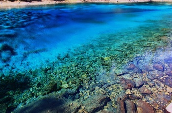

九寨沟——五彩池
五彩池是九寨沟最小的海子，但是色彩最为丰富，不同的角度和位置有不同的色彩，在阳光的照耀下，颇为神奇。
五彩池位于九寨沟Y字型三条沟的则查洼沟南段，长海的北边，以秀美多彩纯净通透而闻名，是九寨沟最小也是最艳丽的池子。
五彩池的水来自高处的长海，池水四季不冻，水中生长着水绵、轮藻、小蕨等水生植物群落，还生长有芦苇、节节草、水灯芯等草本植物。这些植物所含叶绿素深浅不同，在富含碳酸钙质的湖水里，就呈现出不同的颜色，使得五彩池上半部呈碧蓝色，下半部则呈橙红色，左边呈天蓝色，右边则呈橄榄绿色，五彩斑斓。五彩池池水清澈通透，透过水面，能清晰的看到池底岩石的纹路，在阳光的照耀下，闪耀着五彩的光芒。